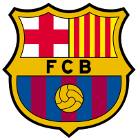

Futbol Club Barcelona yoki shunchaki Barcelona — Ispaniyaning Barselona shahrida tuzilgan professional futbol klubi. Ispaniya Primera Divizioni vakili.1899-yilda Joan Gamper boshchiligida shveysariyalik, britaniyalik, ispaniyalik va kataloniyalik futbolchilar tomonidan tashkil qilingan. Klub Kataloniyaning ramzlaridan biriga aylanib qolgan, shuning uchun ham u — El Barça es mes que un club („Barca“ — bu, klubdan ham ortiqroq) deb ataladi. Barcelona muxlislari „culés“ nomi bilan tanilishgan. 2006-yilga kelib aʼzolarining soni 140,000 kishidan ortib ketgan.
Bosh menyu